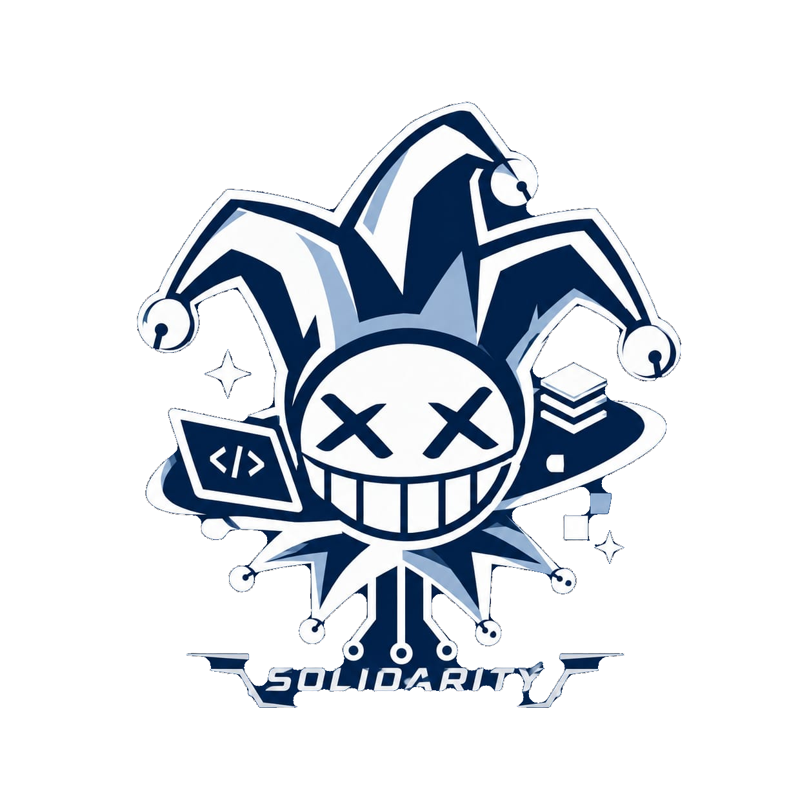

bahasa pemrograman
hobi
klik kartu untuk membalik
klik di mana saja sekali supaya lagu bisa otomatis diputar

SOLIDARITY
01 / tentang
SOLIDARITY lahir dari kelas SI26A dibuat pertama kali oleh Faris. Tujuan dibuat lingkaran pertemanan ini adalah untuk mengerjakan tugas bersama, belajar, mengenal satu sama lain, dan membangun potensi diri sebagai mahasiswa Sistem Informasi.
Di sini kami simpan siapa kami, apa yang kami suka, dan foto-foto yang pantas dikenang. Kami welcome ke semua orang, tergantung bagaimana cara pandang anda kepada pertemanan kami.
02 / anggota
bahasa pemrograman
hobi
klik kartu untuk membalik
klik di mana saja sekali supaya lagu bisa otomatis diputar
03 / skill
Semua bahasa pemrograman yang dikuasai anggota, digabung jadi satu. Klik salah satu untuk melihat siapa saja yang jago.
04 / galeri